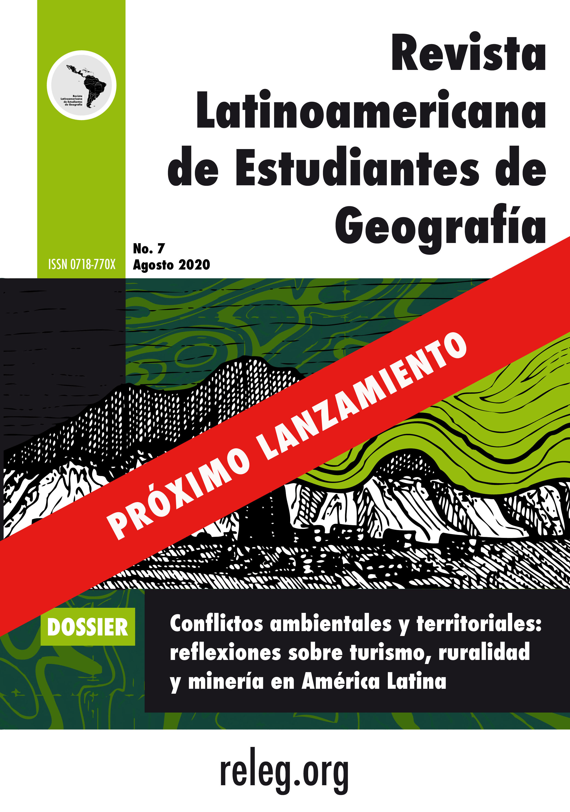

Produccion académica, investigativa y didáctica entorno a la geografía como disciplina y saber escolar
Presentación
La Revista Latinoamericana de Estudiantes de Geografía (RELEG) es un proyecto editorial estudiantil con amplia trayectoria. Surge como un esfuerzo colaborativo para conformar un espacio de difusión de artículos científicos, ensayos, reseñas de libros, columnas de opinión, entrevistas, crónicas, cuento y poesía de estudiantes latinoamericanos. Su historia está ligada a los Encuentros Latinoamericanos de Estudiantes de Geografía (ELEG) y a la Asociacón Latinoamericana de Estudiantes de Geografía (ALEGEO). Ha contado con la participación y organización constante de estudiantes de geografía de toda la región y también de otras disciplinas.
La primera edición de la la RELEG se publicó en 2009. Desde entonces han participado más de 214 personas de toda Nuestra América en las diferentes comisiones (editorial, difusión y comunicación, financiamiento y logística, diseño editorial y web), como autoras y autores y como integrantes del Comité Académico. Entre ellos se cuenta con estudiantes y profesionales de la geografía de países como Chile (41), Brasil (39), Colombia (32), México (26), Venezuela (26), Argentina (22), Bolivia (9), Perú (9), Cuba (4), Costa Rica (3), Uruguay (1), Ecuador (1) y Honduras (1).
Actualmente, el Comité Editorial está conformado por estudiantes y egresados de diversas instituciones públicas y privadas que cuentan con reconocida calidad académica. El objetivo de la RELEG es ser una plataforma editorial para que estudiantes publiquen y difundan sus trabajos e investigaciones y generar así una red de comunicación y conocimiento que pueda contribuir a pensar una geografía latinoamericana. Del mismo modo, mantiene siempre sus puertas abiertas a los estudiantes que quieran aprender y formarse en el oficio editorial al integrarse a las diferentes comisiones que le dan vida.
Invitamos a enviar trabajos y aportar reflexiones desde los territorios para mantener vivo este proyecto que busca generar un espacio para la difusión y discusión de diversas problemáticas que aporten al conocimiento geográfico, a visibilizar y buscar soluciones a las diversas injusticias y conflictos que afectan a los diversos territorios, y con ello, mostrar el compromiso irrestricto que la geografía tiene con imaginar una mejor Latinoamérica.
Comité Editorial
-->
RELEG séptima edición RELEG sétima edição

No. 6 (2019)
SUMARIO
Editorialpp. v–viiiComité Editorial.
La ciudad desde el conflicto territorial y sus múltiples espacialidades
Interações geoambientais no contexto urbano do bairro Edson Queiroz em Fortaleza/CEpp. 2–9Diego Silva Salvador.
El borde urbano un concepto dinámico e integral para el estudio de los espacios urbano regionalespp. 10–20Natalia Isabel Gil Grandett.
Comunidades originarias en ciudades latinoamericanas: Jerarquía y diversidad de marcos legales vigentes. El caso de las comunidades tobas del Municipio de Santa Fe (Argentina)pp. 21–29Pilar Guadalupe Cabré.
Reflexiones de las estrategias para las Mipymes en el área metropolitana de Bucaramangapp. 30–39Andrés Leaño.
Geografía y género
Perspectiva de género en espacios centrales: Discusión en torno a la calle Dr. Mora. Centro histórico de la Ciudad de Méxicopp. 41–47Adriana Yadira Rentería Flores.
Conflictos ambientales
Mercantilización y resistencia en el Istmo oaxaqueñopp. 49–64Jesús Cristofer Fuentes Ruiz.
Panorama del agua en México: un análisis a la luz de la reforma hídricapp. 55–62Yazmín Malinalli Miranda Molina.
Gestión de riesgo y cambio climático en Latinoamérica
El territorio fluvial como instrumento de prevención del riesgo de inundación en la rivera sur del Río Laja, en la Comuna de Lajapp. 64–73Maciel Gatica Herrera, Fernanda Pulgar Salamanca, Hernán Correa Román & Luis Díaz Valenzuela.
Calentamiento Global y conflictividad sociohídrica ante el colapso ambiental del estado de Morelos, Méxicopp. 74–84Josemanuel Luna–Nemecio.
Pensamiento geográfico
Civilización y salvajismo: Análisis del determinismo geográfico y su difusión a traves de algunos textos escolares y obras geográficas en colombia durante el siglo xxpp. 86–99Adriana Baquero Pérez, Lina Marcela Giraldo Mejía & Natalia Moreno Samudio.
Reseñas
Ibarra, V.; Schteingart, M. (2016). Desarrollo urbano-ambiental y movilidad en la Ciudad de México.pp. 101–105Arturo Eduardo Anzaldo Paúl.
Columnas de opinión
Resistencia: La lucha de las mujerespp. 107–108Vanessa Quintana López.
Cuento
La abuela Ramonapp. 110–111Oscar Alejandro Galeano Ospitia.